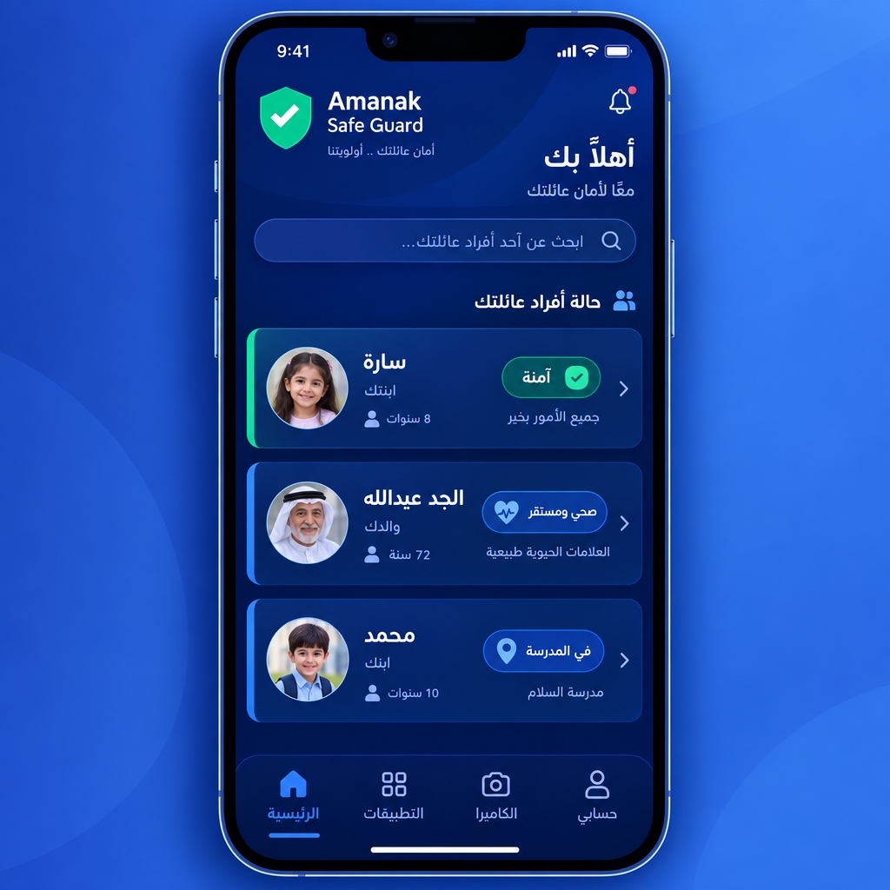

📍
1. تنبيه الموقع
وصول أو مغادرة منطقة آمنة (المدرسة، المنزل، بيت الجد)، أو خروج غير متوقع عن المسار المعتاد.
جارٍ تحضير أمانك...
راقب نشاط جهاز طفلك واحصل على تنبيهات فورية — بوضوح كامل وشفافية داخل الأسرة.
خدمة حماية طفلك لا تعطيك سجلاً غامضاً من الأرقام، بل تخبرك بما يهم فعلاً: هل وصل الطفل إلى المدرسة؟ هل استخدم الجهاز وقتاً أطول من المعتاد؟ هل ثبّت تطبيقاً جديداً؟ هل وصلته رسالة من شخص غريب؟ وهل ضغط زر الطوارئ؟
وكل تنبيه يصلك بلغة واضحة مع سبب التنبيه وما الذي يُنصح بفعله، لتقرر أنت خطوتك التالية. ويمكنك ضبط حجم التنبيهات لكل طفل على حدة حتى لا تتحول الإشعارات إلى ضجيج.
القيم والأمثلة في هذه الصفحة توضيحية لشكل الخدمة — عدّلها لتناسب سياستك الفعلية.
كل نوع له درجة أهمية مستقلة، وتستطيع ضبط كل واحد على حدة لكل طفل.
وصول أو مغادرة منطقة آمنة (المدرسة، المنزل، بيت الجد)، أو خروج غير متوقع عن المسار المعتاد.
تجاوز الحد اليومي المحدد، أو استخدام الجهاز في وقت محظور (بعد النوم، أو خلال وقت الدراسة).
محاولة الوصول إلى محتوى غير مناسب للعمر، أو ظهور مواد عنيفة أو غير لائقة في التصفح.
تواصل من رقم أو حساب غير معروف، أو محاولة محادثة متكررة من شخص خارج دائرة العائلة.
تثبيت تطبيق جديد على الجهاز، مع تصنيفه فوراً (آمن / خطر) وسبب التصنيف.
ضغط الطفل زر الاستغاثة، أو عدم استجابة الجهاز للحركة لفترة طويلة. يصل التنبيه بأعلى أولوية.

لا نعرض لك بيانات تقنية خام، بل ملخصاً منظماً لكل طفل يجيب على أسئلتك اليومية في ثوانٍ.
سيناريوهات نموذجية توضّح كيف يبدو استخدام الخدمة في الواقع اليومي.
سارة كان من المفترض أن تكون في المدرسة، لكن التنبيه وصل الساعة 11:40 بخروجها من نطاق المدرسة. اتصلت الأم فوراً فعرفت أن المدرسة أخلت الطلاب مبكراً ولم تصل الرسالة للجوال. النتيجة: تدخّل في دقيقتين بدل قلق ساعات.
تنبيه «وقت الاستخدام» وصل الساعة 1:15 صباحاً بأن الجهاز نشِط، والأهل كانوا يظنون الجميع نائمين. تبيّن أنه محادثة متأخرة من حساب غير معروف. النتيجة: حوار هادئ في الصباح وضبط الحدود الزمنية للجهاز.
تنبيه «الاتصال» رصد رسائل متكررة من رقم مجهول لطفل في العمر المتوسط مع محاولة استدراج لمكالمة. استُخدم الخط الساخن السري في أمانك للإبلاغ. النتيجة: حفظ المحادثة كدليل وإبلاغ دون علم الطرف الآخر.
القصص أعلاه سيناريوهات توضيحية مكتوبة لعرض شكل الاستخدام، وليست حوادث موثّقة من مستخدمين حقيقيين.
أرقام تُجمَع تلقائياً حتى لا تحتاج إلى متابعة يومية يدوية.
المؤشرات أعلاه قيم تصميمية للعرض، وتختلف حسب إعدادات كل حساب.
لا. نعرض أنماط النشاط والتنبيهات (مثل تواصل من رقم غير معروف)، لا نصوص المحادثات الخاصة.
نعم، نؤمن بالشفافية داخل الأسرة، ويظهر التطبيق بوضوح ولا يعمل في الخفاء.
يمكنك ضبط كل نوع تنبيه على حدة، واختيار الأوقات التي تصلك فيها الإشعارات لكل طفل.
الباقة المميزة تتيح حتى 4 أفراد، والباقة العائلية تتيح عدداً غير محدود.
تجربة مجانية 14 يوماً، ويمكنك إلغاء الاشتراك في أي وقت.